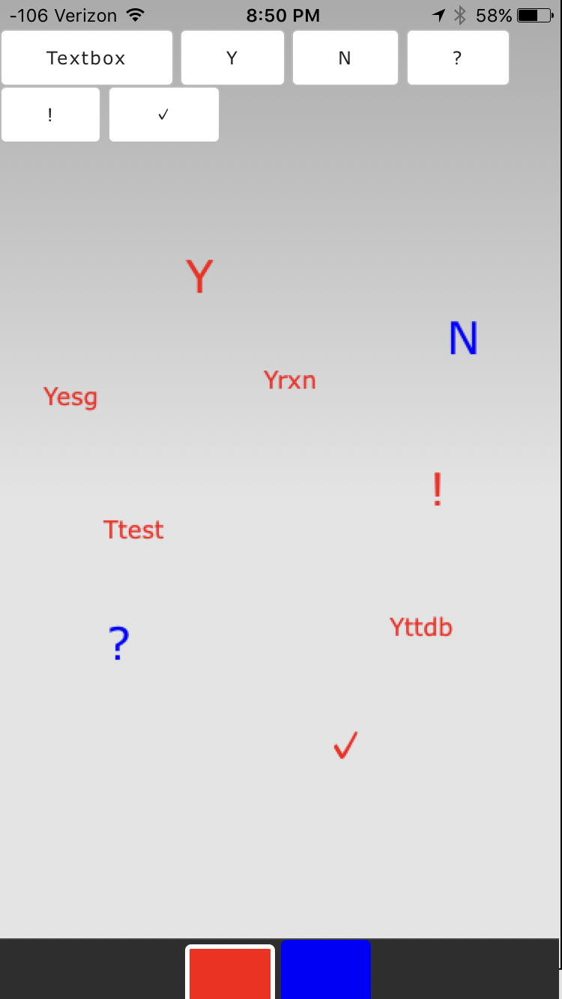
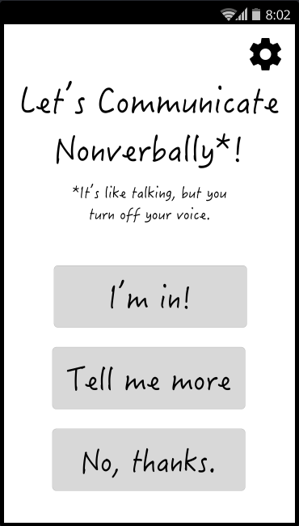
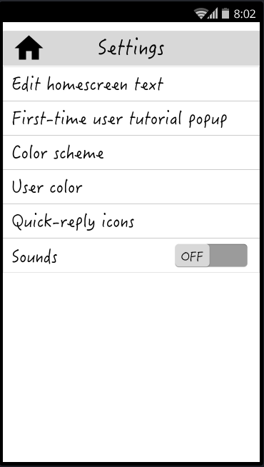

Design Refinement
The feedback from our heuristic evaluation can be found here.
What is your design? How does it work?
Our design is a nonverbal, spatial, and conversational communication app; our implementation of it consists of two parts: a mockup interface, and a partial implementation of the main chat screen. The mockup interface, containing the settings and language which we would intend to ship, can be found on our InVision page; the chat prototype is hosted on our team page at the HFID website.
Our design is an application in which users can communicate through text, emojis, or drawings. Users can place these messages anywhere on the screen. Users can choose the color of their messages for fun or in order to communicate which person created that message. The design also incorporates a few other affordances. One example of this is our quick-chat icons. These are a set of icons that a user can use to quickly place a set of predetermined messages on the screen. For example, a user can press a checkmark icon, and then tap anywhere on the screen to place a checkmark message. The prototype of our chat screen is shown below.
The app incorporates a home screen which informs users about the app and why it needs to be used. In addition, it also provides a settings page where users can configure the app. Our prototypes of these two pages are shown below.
 What changed, and why did you change it?
In our decision of the methods we would use to bring our prototype online, we considered several tradeoffs. Our home screen and settings screen very much lend themselves to “traditional” digital prototyping methods like Sketch or InVision. However, our chat screen presents some challenges if implemented using these prototyping tools. One of the important aspects of our spatial design is that users can place their content wherever they would like. Traditional prototyping tools only allow you to press or navigate in very specific ways, which removes the core experience of the spatial chat. Implementing the prototype using a production-level technology would allow you to implement this customizability. The prototype in particular lacks this customizability, due to technical and time limitations, but a “live” version would ideally have greater variety.
Another tradeoff we considered when prototyping was the ease of producing the prototype. Tools like Sketch and InVision allow you to bring prototypes online rather quickly, and are a good way to rapidly obtain feedback about a given design. On the other hand, production-level technologies take more time to implement.
We considered these tradeoffs and decided that different prototyping tools were appropriate for different portions of our app. We decided to prototype the home screen and settings screen using Sketch and InVision in order to take advantage of its ease of prototyping. We decided to prototype the chat experience in Phonegap in order to provide the customizability of the chat screen. We also worried that we wouldn’t be able to implement the whole chat screen in the Final Refinement phase, so beginning with production-level technology in this phase allows us to make necessary progress on our final product.
Very little changed between the last paper prototype and the initial digital prototype of our design. We did away with the tutorial, in order to reduce start-up time and in acknowledgement of feedback from our user-testing that suggested the tutorial would not be used. Due to the removal of the tutorial, we have placed more emphasis on using familiar and intuitive icons and interactions. In the initial screens, we added a dialogue that asks the secondary user to hand the phone back to its owner in the event that they do not want to hold a conversation. This was in response to feedback that it wasn’t clear when the interaction was over.
We initially had a homepage, where the primary user could interact with the settings screens, and a second page for initiating a conversation with a secondary user. We decided to remove the first home-screen and use the conversation initiation screen instead, but later got insightful feedback that suggested we should put it back. In our heuristic evaluation, our evaluators noted that the settings button was available (erroneously) to the secondary user because of the lack of a home-screen for the primary user. For this reason, we will bring back the primary user home-screen.
Other than the removal of the tutorial, our product wasn’t down-scoped during this phase. Our prototype is missing many features that we desire, especially the spatial features such as panning and zooming. These features are missing solely due to time constraints on implementation. We plan on implementing these features in the Final Refinement phase.
After getting feedback from our heuristic evaluations, we decided on a number of changes to make on both our InVision and PhoneGap prototype.
On the InVision prototype, we are planning on removing the settings gear from the intermediate settings screens that also have a back to settings arrow because our users commented that having two buttons that perform the same function was a redundant interaction. We also received feedback that users were unsure whether or not their color selection had been saved, so we are planning on adding a ‘done’ button to the bottom of the color selection screen to confirm user changes. There was some confusion about where the home button took users, specifically a pain point surrounding the fact that the button appeared to leave the users on the same page with the heading “Let’s chat nonverbally.” To remedy this, we are planning on adding back the home screen that we previously removed (as described earlier in this write up) so that the “home” experience is separate from the other screens.
We also received heuristic evaluation feedback for the chat screen. One suggestion that a user had was that the “Y” and “N” icons make text that gets written on the canvas “Yes” and “No”. Users intuitively understood that “Y” and “N” mean “Yes” and “No”, and they would like the app to explicitly reflect that meaning.
Another user suggested that when you click away from a textbox, the text within the textbox should be submitted. This would add another method of drawing the text onto the screen. This also would return the user to the mode of selecting the location of their input. This makes it easy for users to end their text input.
Users suggested having the placement mode revert to the last chosen mode instead of always going back to textbox. This means that it would remain in emoji mode after entering an emoji, or in quick chat mode after entering a quick chat icon. This would be beneficial for users if they respond in the same mode as the other person often. We’ve already seen that users tend to respond in a symmetric manner (i.e. verbal to verbal, or written to written). This means that leaving the app in the same mode might save users time.
The final suggestion was to make the red and blue color selection buttons look distinct so you can tell which is selected. We will investigate different methods to making one of the buttons clearly indicate that it is selected.
What key insights did you gain during this phase?
Additionally--although we ourselves are familiar with the rationale behind a nonverbal communication app, and although nonverbal users also recognize this, many secondary users do not; a “Why this app/why I’m nonverbal” explanation either in the application’s introduction or in the preamble to the testing script could prove valuable. It would also increase the startup time for the app, though -- additional examination is worthwhile.
Another insight that we gained is that adding more features comes at a price. Initially, our chat screen implementation only consisted of one possible mode: text box mode. This made things very easy for users. Anywhere that they tapped on the screen would create a text box in that location. As we added more modes, we realized that it added more and more overhead and management by the user about which mode they were in. As such, our insight is that each additional feature should be carefully considered and added only if its added value is greater than the increased cognitive load on our users.
What questions do you have now about your project? What shortcomings are you aware of?
We would like to investigate the optimal arrangement of elements on the chat screen, so that the interaction is comfortable on a small mobile screen. Considerations include how our view should adjust when the keyboard is open and closed, since it takes up a significant portion of the screen. This is our main concern, that the mobile screen will cause the interaction to feel cramped. Our hope is to implement zoom and pan so that the canvas will not be limited by the screen size. With those spatial elements implemented, the problems with screen size should be mitigated.
Another question about our design relates to how comfortable people are with having others handle their phone and how comfortable they are handling another’s phone. For one, the phone’s owner might be concerned that another person may damage their phone. They also could be concerned that an incoming notification or data may be shown to the other user that the phone’s owner wouldn’t want them to see. As the recipient of the phone, you may also be worried about these issues. It has been very hard to find answers to this question with a paper prototype, but now that we have a digital prototype, we can test scenarios in which users actually hand off their phones.
What are your future plans?
First, we plan on fixing usability problems that we learned about through the heuristic evaluation assignment. Next, we plan to implement the future features, such as panning, zooming, emoji input, and colored borders. These are all features that will add to the user’s experience, and we feel that they are necessary to be included in the final product. Then, we will incorporate settings, customization, and the home screen from the InVision prototype into our final product.
Along the way, we will be testing our app for usability and validating our design decisions with users. We feel that this phase helped us learn about usability problems and about initially prototyping our solution, and we are ready to move forward with the Final Refinement phase.